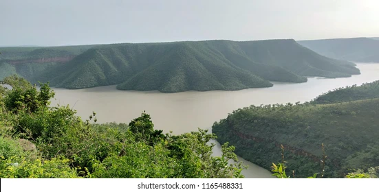
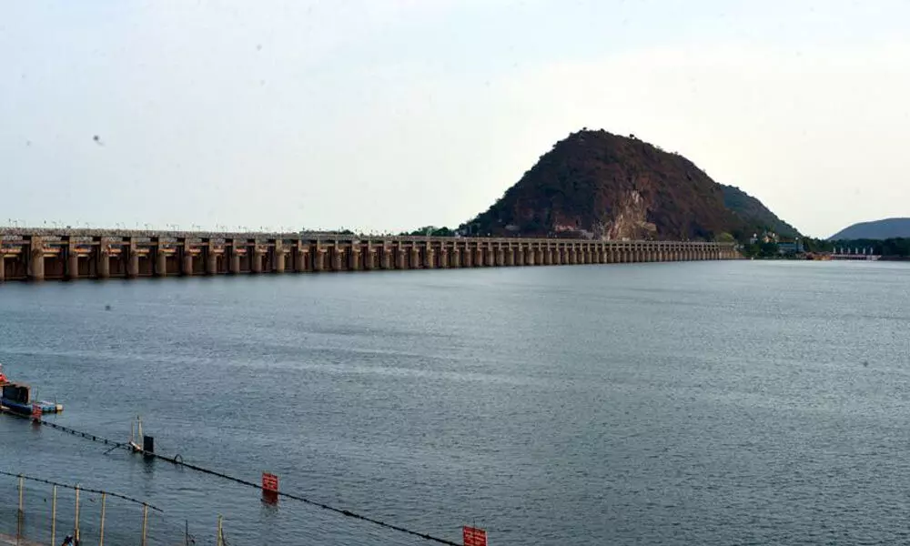

7.Krishna River
The Krishna River is one of the most important peninsular Rivers In India . It is one of the most extensive rivers in central-southern India. The river is almost 1,300 km (810 miles) long. On certain occasions, the Krishna River is denoted as Krishnaveni. The river functions as a source of irrigation water for Karnataka, Maharashtra, and Andhra Pradesh.
The Krishna River has its origin at Mahabaleswar in the vicinity of Jor village in the state of Maharashtra. The Jor Village is situated to the farthest north of the Wai Taluka in the west. The river ultimately pours into the Bay of Bengal at Hamasaladeevi in Andhra Pradesh, on the eastern shorelines of India. The delta of the river is one of the productive regions in India. The area also housed the prehistoric Ikshvaku and Satavahana sun reign of kings. Wai is the oldest city on the riverbanks of Krishna in the Satara District of Maharashtra. The biggest city on the banks of the river in Maharashtra is Sangli and at the same time, the biggest city on the banks of the River In Andhra Pradesh is Vijayawada.

Environmentally, the Krishna River is one of the most ruinous rivers in the world because it creates intense land corrosion throughout the monsoon. The river runs in rapids and it is quite fuming, frequently attaining depths of more than 75 feet or 23 meters. Paradoxically, there is a maxim in Marathi language of Maharashtra, "santh vaahate krishnamaai" which stands for "calmly runs Krishna". This expression is also utilized to denote how an individual should be as calm as Krishna. Nevertheless, in fact, the flow of the river results in a significant extent of corrosion between June and August. Throughout this period, Krishna gathers productive soil from Karnataka, Maharashtra, and the western part of Andhra Pradesh to the delta area.

The most important tributary of the river is the Tungabhadra River, which is the result of the union between two rivers - the Tunga River and Bhadra River. Both these rivers have their sources in the Western Ghat Mountain Ranges. Other tributaries of the Krishna River include the following:
Koyna River
Venna River
Malaprabha River
Bhima River (and the tributaries of Bhima River like the Kundali
River, flowing into the Upper Bhima River Valley)
Yerla River
Ghataprabha River
Dindi River
Warna River
Musi River
Paleru River
Dudhganga River